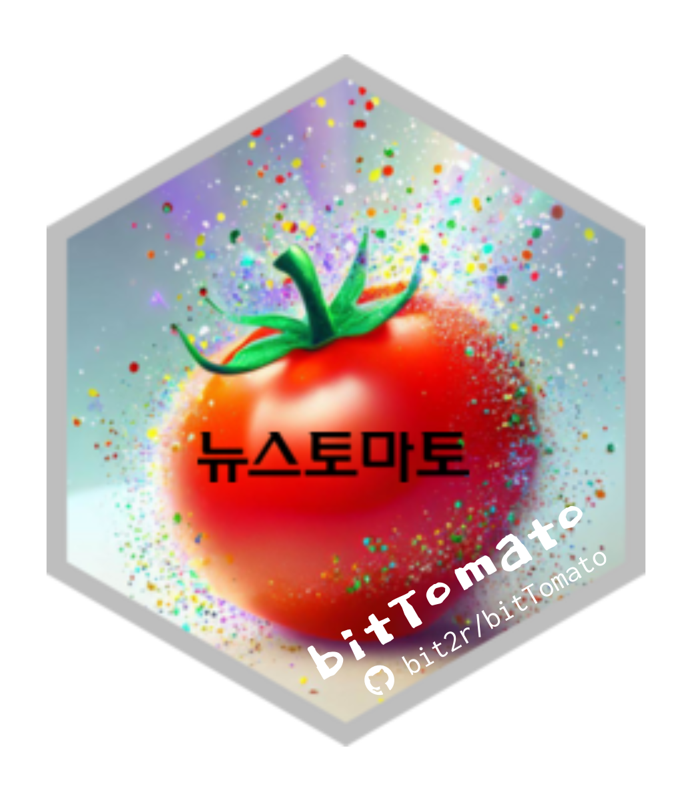
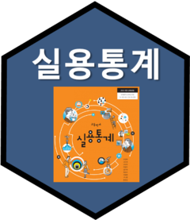
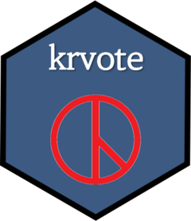

| 로고 | 패키지명 | 데이터 패키지 설명 |
|---|---|---|
 |
bitTomato | bitTomato는 ’한글 텍스트 데이터 분석의 학습을 위한 실 데이터를 오픈소스로 제공’한다는 목적에 공감하는 뉴스토마토가 제공한 뉴스 기사를, 한국 R 사용자회가 저작 배포하는 R 패키지입니다. |
 |
hsData | 통계청 통계교육원에서 발간한 ‘고등학교 실용통계’ 교과서 |
 |
krvote | 중앙선거관리위원회 선거통계시스템에 공개된 역대 선거관련 투표와 득표 공공 데이터 |
| bitData | 통계(데이터 과학) 교육과 신속한 현업 적용에 필요한 대한민국 데이터셋: 파머 펭귄, 국방부 남녀 신체측정, 강남 강수량, 인구, 대기오염물질, 온실가스 등 |
공개 데이터
통계 대중화와 디지털 불평등 해소를 위한 노력으로, 한국 R 사용자회는 다양한 오픈 데이터 패키지를 제작하여 제공하고 있습니다. 공개 패키지들은 교육, 연구, 그리고 현업에서 신속하고 효과적인 데이터 분석의 토대가 될 것으로 기대됩니다.